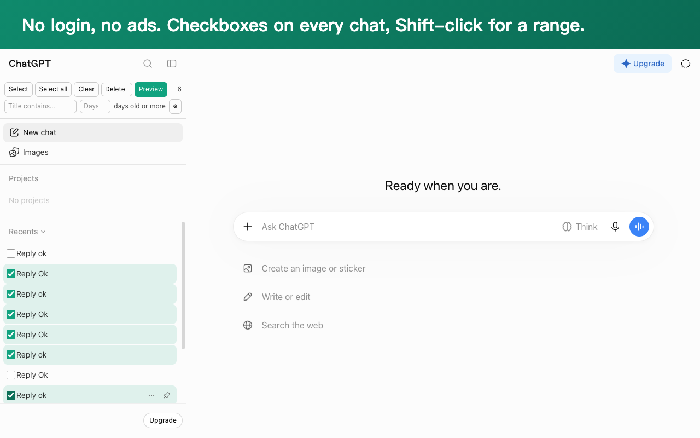
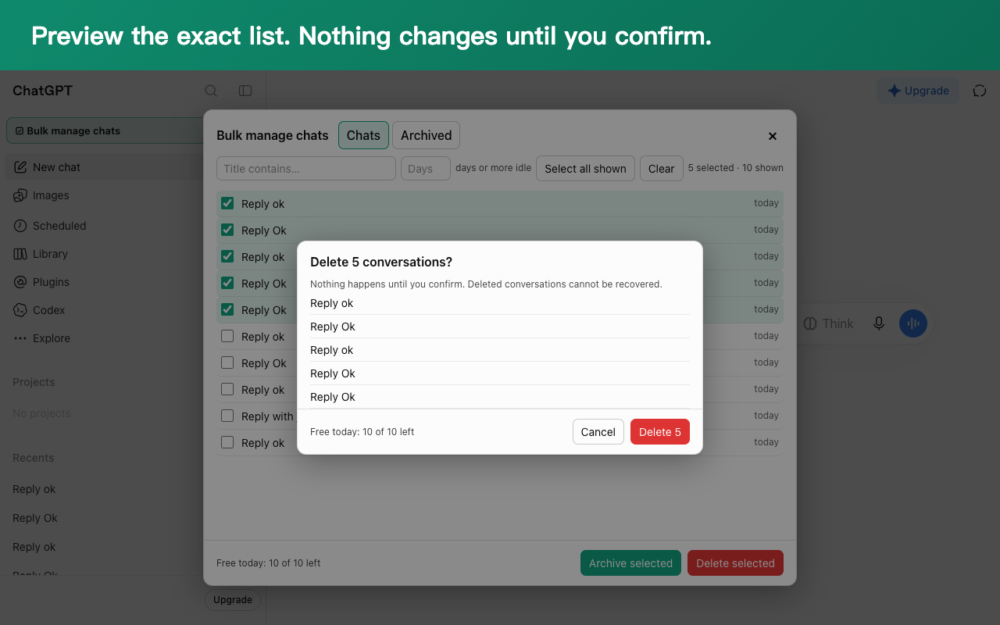
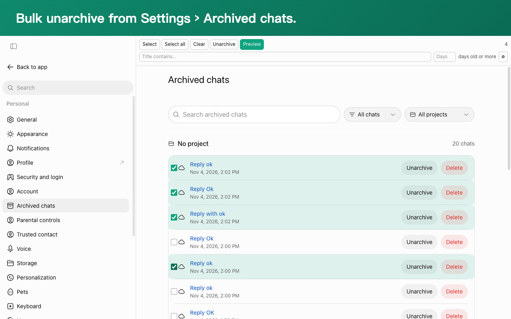
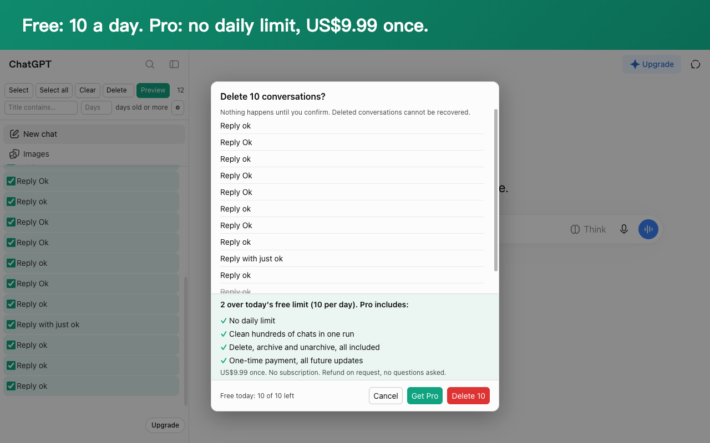

Bulk Delete ChatGPT Chats
Clean up hundreds of ChatGPT conversations in one sitting. No login, no ads, zero data collection.

What it does
Select fast
A panel lists your whole history in seconds, even thousands of chats. Select all, or Shift-click a range.
Filter first
Narrow down by a word in the title, or to chats idle for 30 or more days.
Preview, then act
See the exact list before anything happens. Delete, archive, or bulk unarchive.
Safe and resumable
Paced to respect ChatGPT's limits, backs off automatically, cancellable, and it picks up where it left off if the page closes.


How it works
The extension runs inside your signed-in ChatGPT tab and uses the same requests chatgpt.com itself makes to list, archive and delete chats. Your chats never leave ChatGPT and nothing is sent to us. It never reads your messages. Its only browser permission is storage, and apart from ChatGPT the only server it contacts is our payment provider, to check a Pro license key.
Pricing
Free
- 10 conversations a day
- Delete, archive and unarchive
- No account needed
Pro
- No daily limit
- All future updates
- No subscription
- 7-day refund, no questions asked

Payments are processed by Lemon Squeezy, our merchant of record. After paying you receive a license key by email; paste it into the extension's settings to unlock Pro.
FAQ
Can deleted chats be recovered? No. ChatGPT deletes them permanently, which is why every run shows a preview first. Archive if you are unsure.
Is this made by OpenAI? No. It is an independent tool and is not affiliated with OpenAI.
What if ChatGPT changes? The extension is tested against chatgpt.com every day and fixed quickly when something changes.